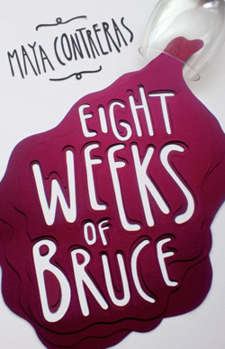

Reflection Effect with CSS - Demo
Reflect image below

img {
-webkit-box-reflect: below;
}
Reflection offset

img {
-webkit-box-reflect: below 10px;
}
Masking with gradients

img {
-webkit-box-reflect: below 0px -webkit-gradient(linear, left top, left bottom, from(transparent), to(rgba(250, 250, 250, 0.1)));
}
Using color-stop

img {
-webkit-box-reflect: below 0px -webkit-gradient(linear, left top, left bottom, from(transparent), color-stop(70%, transparent) , to(rgba(250, 250, 250, 0.1)));
}
Alternative way for Firefox
View this demo in Firefox, otherwise the effect will not be delivered.